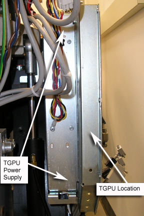

NOTE:
The power supply is located behind the TGPu assembly (
Illustration 1
.) The Phillips-head screws holding the power supply in place are located on the side of the assembly.
Illustration 1:
TGPU Power Supply Location
